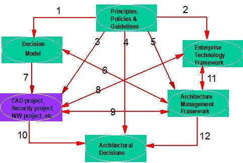

| Guideline: Evaluation & Selection Framework |
 |
|
1 DescriptionThe Evaluation and Selection Framework Technique Paper, shows how to define a single set of selection criteria, processes and defined roles and responsibilities, for the evaluation and selection of components and packages, as part of the Decision Model Work Product. Many organizations have multiple processes and define individual evaluation and selection criteria as required, often at the solution design or package selection stage. However, having a single, enterprise-level framework, built around previously defined principles that underpin the business goals and objectives, eliminates duplication of effort, allows rational, objective criteria to be defined and provides for more consistent decision making over time. The technique provides a framework within which design and acquisition decisions can be effectively made and communicated. Once this evaluation and selection framework has been defined, the Decision Model WP can then be used to make decisions regarding the fit of a specific product to a specific business need (for example, using the CAD Infrastructure Product Selection technique paper, or the PSI Product Selection capability pattern). It can also be used for the selection of a potential standard, or even a less structured decision for which criteria might need to be developed. Evaluation and selection activities can and do occur at many levels within an organization. At solution design time, this enterprise-level framework is used in many ways:
2 ContextWithin the IGS Method, there are several work products that provide inputs to these evaluation and selection activities and others that do detailed component selection. The purpose of this technique is not to replace or duplicate these work products, but to define the overall framework within which these detailed component evaluation and selection activities can occur. The overall objective is to allow architectural components, standards, products, and services to be evaluated and selected based on rational, objective criteria, which reflect the overall business needs, rather than the requirements of a single solution. This increases the chances of identifying shared functions and the same solution being chosen for similar functional requirements by different decision makers. The diagram below shows the key relationships between some of the work products involved and the typical execution of a CAD, Security, Network or other design level project, where detailed product and component selection occurs. Each relationship is numbered and the description of these is included, to help clarify and position where and how this technique is used. 
Decision Model: Defines the overall processes, roles and responsibilities (at an enterprise level) for how components, products, packages and suppliers will be selected. Defines generic evaluation and selection criteria. Provides the rules for how products and components will be selected at a project level. It is this Evaluation and Selection Framework TP that focuses on defining these component parts of the Decision Model. The Decision Model provides a key input to all Solution level projects where component and design decisions need to be made (7). It is also integrated with the Architecture Management Framework, which ensures that the processes, roles and responsibilities defined in the Decision Model are adhered to (6). Enterprise Technology Framework: Defines the overall framework of technology components required by an enterprise. Documents all the functional and non-functional requirements of each technology/infrastructure component. Documents the various implementations of each technology component allowed in the enterprise. Documents selected products and standard components. All component parts of each chosen reference model (e.g. ESS templates, Patterns for e-business) will exist in the Enterprise Technology Framework (ETF) - so each reference architecture and it's chosen implementations will be a subset of /instance of the ETF. For example, the Component Model (WP) for a Customer Service System will be a subset/instance of how various components defined in the ETF will be implemented, to support Customer Service. The Enterprise Technology Framework will implement the Principles (2) and the contents will evolve and be managed over time by the Architecture Management Framework (11).
Architecture Management Framework: Defines the processes, roles and responsibilities for managing an
enterprise-level architecture over time, as new systems and solutions are developed and implemented. Defines the rules
and guidelines for when new products and components can be selected.
Management decisions are captured in the Architectural Decisions WP (12). Architectural Decisions: Document all decisions taken during a development or architecture-based project, including (but not limited to) product selection decisions, component design decisions, conformance/non-conformance decisions, with reasons why, plus appropriate management signoffs. Individual Projects (CAD, Security, N/W, SM, etc.): implement a subset of the desired function required by the business.
As new design and component decisions are made and new standards, etc. are agreed, the Enterprise Technology Framework will be updated (8). 3 StepsThis technique has four main steps:
Step 1 – Understand existing evaluation and selection frameworkUsing the team's understanding of the current IT environment and processes, document the existing processes, roles and responsibilities involved in product, component and package evaluation and selection.
Working in this way highlights overlaps and issues, which will be input to the subsequent definition of transition initiatives to implement a common evaluation and selection framework, as part of an overall enterprise-wide decision model. Step 2 - Define Evaluation CriteriaThe purpose of this step is to define the general evaluation criteria and categories, which can be used for making decisions regarding components, standards, and products. These general criteria will be customized and made more specific, as each evaluation team prepares to make design and component selection decisions, using the process outlined in the following step. Both the evaluation process and criteria can be effectively defined as workshop activities. Some consultants have found it useful to define categories of evaluation criteria such as Business Function, Vendor, Performance Criteria and Architecture Compliance to provide a framework for discussing and defining the criteria. Working as a team, use the sample criteria or a tailored straw man, as a basis for defining the global level criteria. Note: It is very easy at this stage, to spend a lot of time refining to too low a level of detail – remember you’re not doing any detailed evaluation & selection yet – there are other work products, which are used for this more detailed level. Develop Documentation Guidelines: In order for the evaluation criteria to be most effective they must be well communicated. You should develop a documentation template, which will work with your client. We suggest you use the sample criteria and processes attached to this TP as a starting point. Select Appropriate Sample Criteria and Categories: Based on the types of architecture being developed, select appropriate categories for criteria and a starter set for each, from the samples. Consider giving these criteria, as part of an associated discussion paper, to the project team prior to the workshop. Define Evaluation Criteria Categories: Beginning with the selected samples or "straw man", agree on the evaluation criteria categories as a team. Remember to choose categories, which will apply across all types of decisions. Define Global Evaluation Criteria: Define the overall set of evaluation criteria. Remember that the individual criteria within each category may differ for each of the decision types being considered. For example, Vendor Criteria for standards selection might include the number of vendors with products conforming to the standard, while for a product selection decision it would be the number of products offered by a vendor which conform to the corporate standard. Step 3 – Define Evaluation ProcessDevelop the process by which the evaluation criteria will be used to make business and technology decisions. This step defines the processes that will be used to evaluate and select architecture components as well as other business and technical decisions. This step can be accomplished either in a workshop, or a series of team meetings. Prepare Straw Man Evaluation Process: The IBM Consultants should develop a sample or "straw man" process for decision-making. This will normally involve defining a process for customizing and agreeing weighting criteria, scoring alternatives and selecting an alternative. The client sample evaluation processes and criteria attached to this TP, has some useful guidance. Note: In general, each specific evaluation and selection decision (at the project/design level) will require a review of the overall evaluation criteria and weightings, defined in the previous step. The values of these weightings and criteria will likely vary, depending on the intended usage of the component and functional requirements. For example, a server database and personal database could have significantly different availability, performance, integrity, security and vendor support requirements. This step of reviewing and tailoring the criteria and weights should be included in the overall evaluation process. Define Scoring Technique: Using the "straw man" process developed above, have the team focus on the scoring technique. If a weighting scheme is part of the process, a discussion of who should set the weights and whether or not the evaluation team should be aware of the weights is usually worthwhile.
Note: Some would argue that the evaluation team should not set the weights, or even know what they
are, to avoid the natural tendency to drive the answer towards a favored solution. This is exactly why we
advocate defining the evaluation criteria and their overall weightings here, before they can be influenced, by the
developing architecture models and selected reference architectures. Another approach to evaluating components is to classify all criteria as "essential", " important", or "nice to have". No combination of "important" criteria can be more significant than any one "essential" criterion and no combination of "nice to have" criteria can be more significant than any one "important" criterion. This scheme forces the evaluation team to define what is really significant to the decision. While this can be quite difficult, it will allow the team to make a decision based on essential requirements, using the important and nice to have items, only for tie-breakers. Step 4 - Document and agree Evaluation and Selection FrameworkDocument the evaluation and selection criteria and processes defined above and agree with sponsor and stakeholders. Once these have agreed they should become an integral part of existing processes within the IT organization. 4 Tools
• Use word processing tools, for example, MS Word, for textual documents defining processes, roles and
responsibilities and evaluation and selection criteria |
| © Copyright IBM Corp. 1987, 2012 All Rights Reserved Property of IBM These materials are intended only for use as part of an IBM engagement |